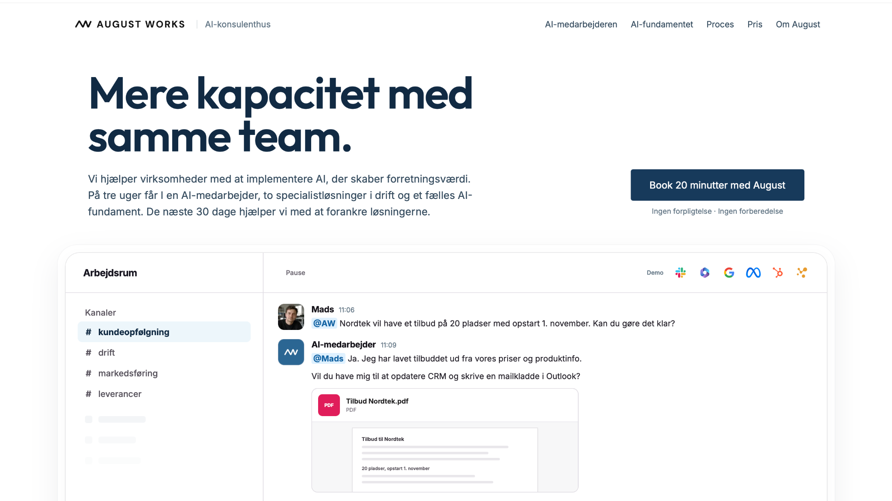

BLENTERA
In development.
Danish Impact / Tech Entrepreneur & Waymaker
Focused on AI-native companies, human-centric innovation and sustainable business.

I thrive when the challenge is new or complex and the direction is still taking shape.
I learn quickly, see possibilities and approach problems from different angles. I form my own view, question established thinking and enjoy taking the lead on strategy and innovation.
I explore widely, but I also value structure. I turn ideas into a clear direction people can understand and build on. When I’m genuinely engaged, I bring energy and persistence to the work.
In teams, I work best with autonomy, candid discussion and bold people. Conversation sharpens my thinking, while space to think independently helps me develop ideas further.
The next decade will test even the strongest market positions.
AI is changing how companies are built and run. Even market leaders may face unexpected competition from companies a fraction of their size. The challenge is turning AI into a core capability that creates greater value for customers and strengthens the business.
Large organisations can combine their scale and customer trust with startup-like agility. Startups can gain capabilities that once required much larger teams. Both can increase productivity, use capital more efficiently and bring the right ideas to market faster.
But greater capacity doesn't automatically make a company more competitive. When companies put products before customers, AI can amplify that mistake many times over.
Realising AI's potential means rethinking how companies are organised and led. That takes a customer-centric mindset, a culture that innovates and adapts quickly, and the judgement to prioritise and know when to stop.
The real opportunity isn't AI itself. It's the companies we can build around it.
In development.

Helping SMBs adopt AI where it creates business value, so they can increase capacity and build a stronger, more resilient business.

Empowering companies to understand people and collaboration more clearly, and make better decisions about teams, roles and leadership.
An AI-native approach to turning bold ideas into impact-driven ventures, with people, planet and profit built in from the start.
My background started in operations and leadership.
At 18, I was responsible for a business and a team of around 10 people. It gave me an early education in what it takes to make a business and a team work day to day, and in making decisions that affect both people and the business.
Since then, I have worked across business development, product and venture building, with AI taking up more of my work in recent years. I have mostly learned by getting close to the work, asking questions, forming my own view and testing it with people who know their craft.
I’m curious by nature, direct in how I communicate and most engaged when I am learning something new, connecting ideas or helping build something that did not exist before.
Get to know meI work best with bold people who want to make a difference and are willing to challenge what already exists.
They might be founders, leaders, builders or changemakers. What matters is ambition, curiosity and a willingness to think differently.
I like working with people who challenge my thinking and expect me to challenge theirs. Creating something valuable together matters more than protecting our own ideas.
With curiosity and optimism,
August